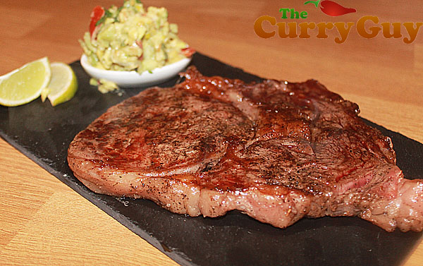

Grilled Wagyu Steak

Perfectly grilled wagyu Ribeye Steak with Avocado raita just like those at the best restaurants!!!
Ingredients:
- 2 x 8oz Ribeye Steaks
- Salt and Pepper to taste
- Juice of two limes (Plus more lime wedges for serving)
- 1 Ripe Avocado - roughly chopped
- 1 Fresh red chilli pepper - finely chopped
- 1 Tomato finely chopped
Preparation Method
- Squeeze the juice of one of the limes over the steaks and set aside while you make the avocado raita.
- Place the roughly chopped avocado, chilli, chopped tomato and the juice of the remaining lime in a mixing bowl.
- Mix and then season with salt and pepper to taste.
- Either heat a tablespoon of olive oil in a pan over medium high heat or use a heated salt block with no oil.
- Season the steaks with a little black pepper and sear on each side for about a minute for rare. Longer if you prefer your steaks more done
- Serve with the avocado raita and more lime wedges.
- Enjoy!!!